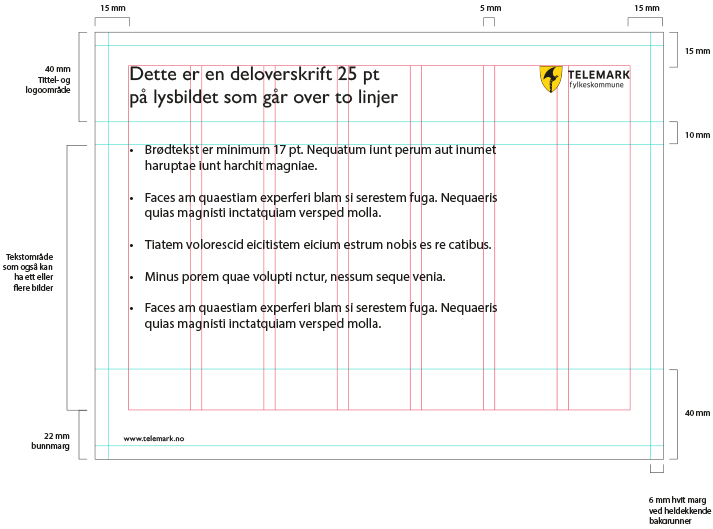
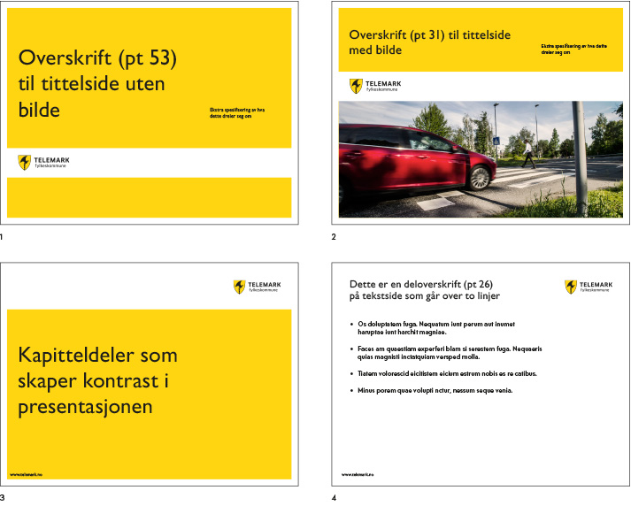
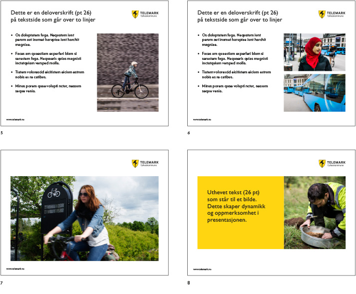
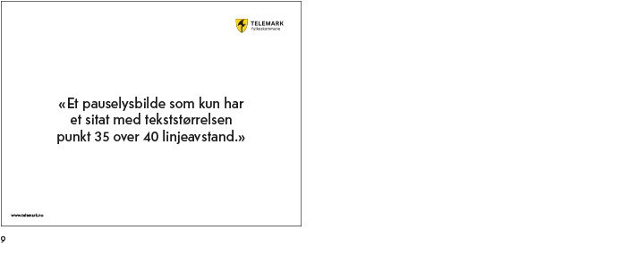
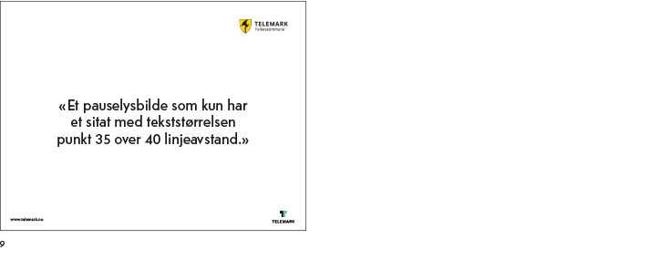
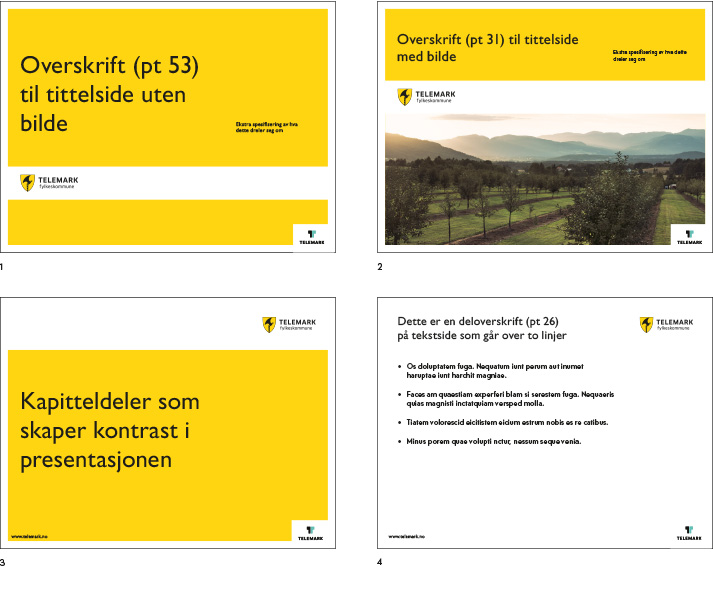

PowerPoint
Du finner PowerPoint-mal i Citrix.
En fast PowerPoint-mal skaper en sterk identitet og en visuell sammenheng i de ulike presentasjonene som lages av ansatte i fylkeskommunen.
Grunnmalen til høyre er satt opp i standard størrelse 3:4 (tilsvarende 254 x 190,5 mm) og ligger til grunn for alle sidemalene på neste side.
I Telemark fylkeskommunes PowerPoint brukes den digitale erstatningsfonten Gill Sans.
- Minimum størrelse på tittel er 25 pt.
- Minimum størrelse på brødtekst er 17 pt.

I malen finnes det valgfrie forsider og undersider. Tekstsidene gir rom for billedbruk. Ingen bilder skal plasseres inn på tittel- og logoområdet (50 mm fra toppen)
1: Forside uten bilde.
2: Forside med bilde.
3: Kapitteldeler, kun typografisk.
4: Tekstside.
5: Tekstside med ett bilde.
6: Tekstside med to bilder.
7: Stort bilde (med eller uten tekst).
8: Pauseside med bilde og tekst.
9: Pauseside med sitat.
For å være en klar og tydelig avsender anbefales det å ha fylkeskommunens logo på alle sider. Store bilder bør derfor ikke bruke hele formatet. Logo og de hvite margene/flatene er et profilerende grep.
I enkelte tilfeller er det naturligvis tillatt å vise bilder på hele skjermbildet.



Bruk av T’en som kvalitetsmerke
Hovedregelen er at Telemark fylkeskommunes profil står på egne bein, uten at logoen til merkevaren Telemark brukes som kvalitetsmerke.
T’en skal kun brukes i Powerpoint presentasjoner som har som mål å utvikle og markedsføre Telemark, eller i sammenhenger der det er viktig å vise tilhørighet til merkevaren Telemark.
Ved bruk av T’en kan også merkevaren Telemarks brand images brukes.
Du finner PowerPoint-mal med T i Citrix. Velg "Ny". "Delt" og mappen "PowerPoint" og mal med kvalitetsmerket.
 